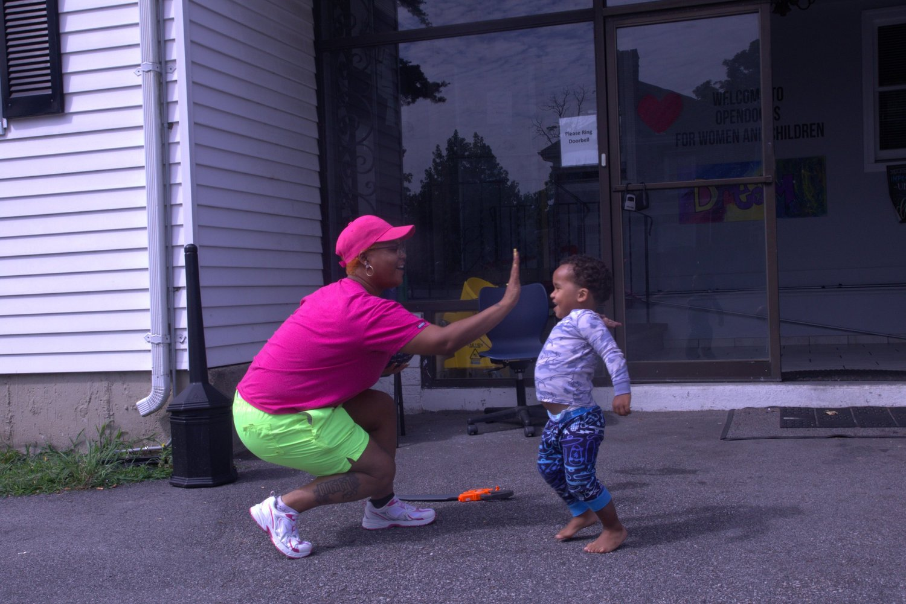
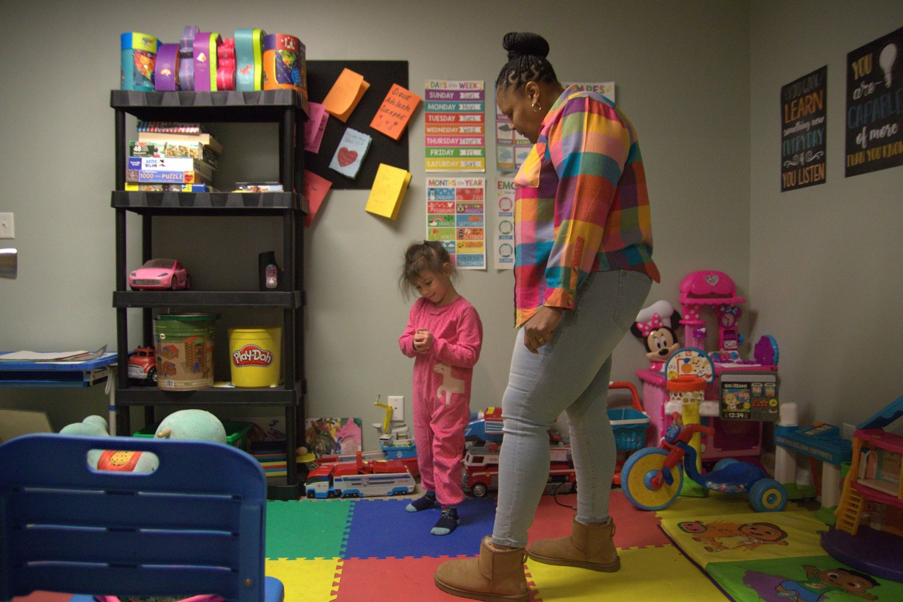
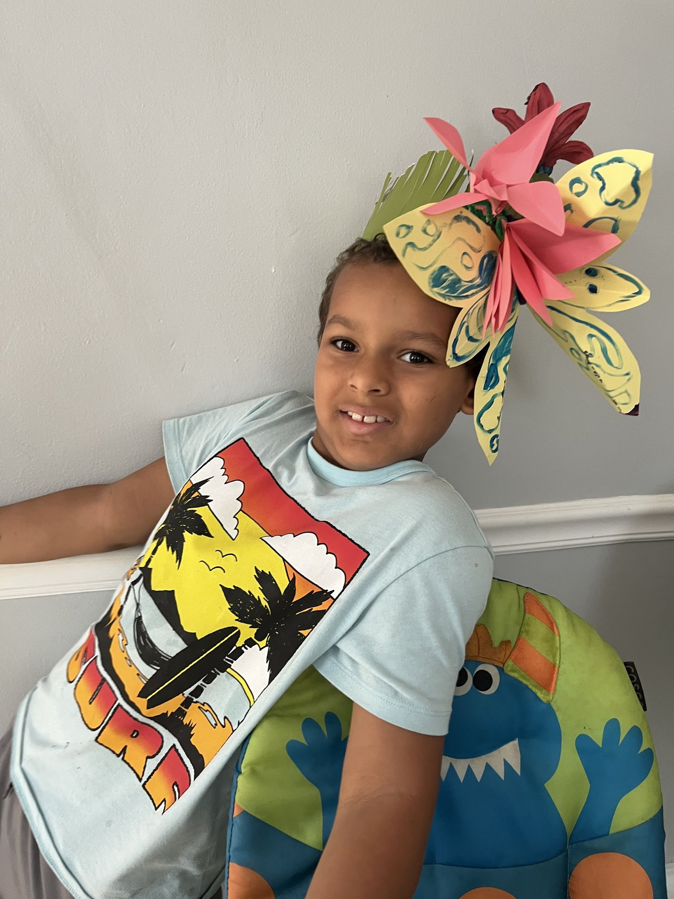
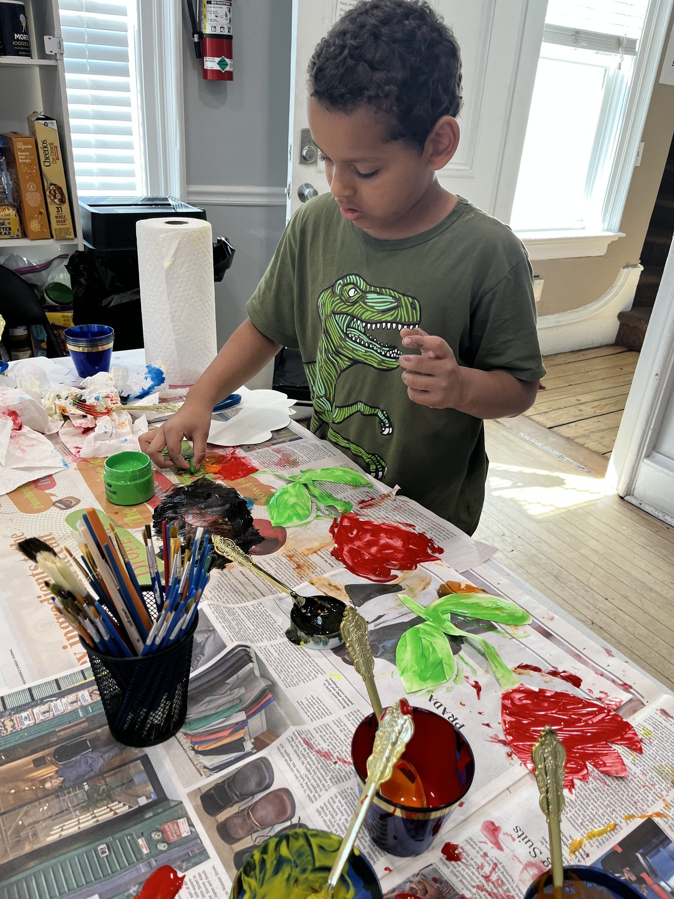
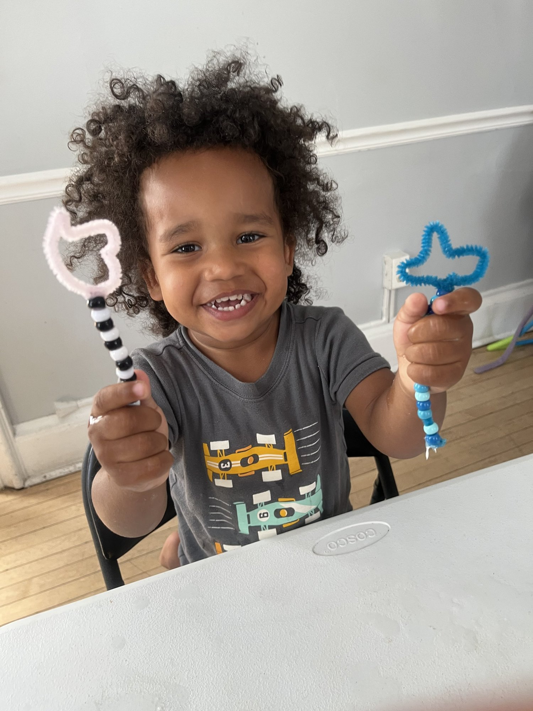

Help us expand our home to reunite mothers with children
With your support, we can provide housing for 34 more mothers and children.
Total Raised So Far
$103,000 for this phase
$1.3 million total
Amount Needed
$135,000
In August 2023, OpenDoors purchased a 10,000 square foot house in Providence and opened the state’s first house dedicated to helping justice involved women with children. In the past two years, we have helped over 120 women and their children. With your support, we can help three times more. Once these renovations are complete, the occupancy of the building can be officially tripled and we can finally bring this house to its full potential.
After $138,000 in renovations, the house opened just before Christmas in 2023. Extensive upgrades are necessary in order to permanently expand the capacity of the house from 15 people to 49, and so far another $164,000 has been invested to upgrade fire code. OpenDoors needs to raise a total of $238,000 to finish the project. So far we have raised $103,000 of this.
Our capital campaign is working to raise an additional $135,000 to finish the project. This funding will help us install a kitchen, additional bathrooms, and a driveway. Download the full capital campaign prospectus here.


Proving that we can strengthen families and reduce incarceration
OpenDoors is raising funds to support our three year, randomized controlled trial testing the effectiveness of the She Thrives Program
In 2027, OpenDoors will begin a randomized controlled trial to test the impacts of our She Thrives program, with the goal of assisting 300 women over three years. This ambitious project hopes to prove that long term recidivism can be reduced and women and their children can be more successful if they are provided transitional housing, wrap around support, and access to GLP-1 medication for addiction recovery. This study, the first of its kind, already has raised over four million dollars and is looking for help raising funds to provide the access to GLP-1 medication and to provide additional housing assistance. The evaluation will be conducted in partnership with researchers from Brown University and the Caron Treatment Center. If you are interested in learning more about this project, please email info@opendoorsri.org



